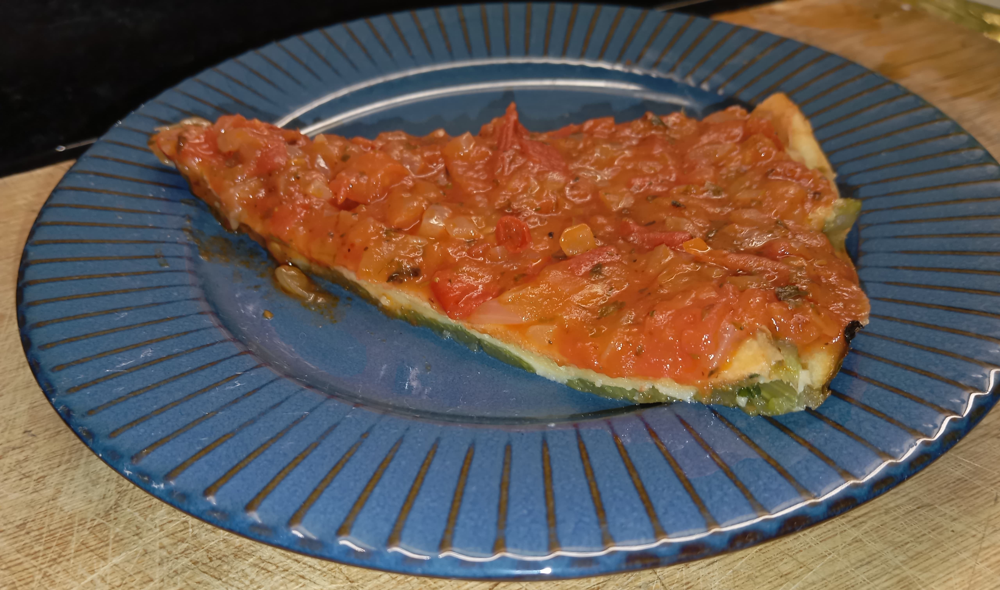

Pizza De Pencas

Ingredientes:
1 atado de pencas
1/2 cucharada se sal
Para la masa:
3 cucharadas de aceite
6 cucharadas de harina
1 cucharadita de polvo de hornear
1 taza de leche
1 cucharadita de sal
Para la salsa:
1 cebolla grande
1/2 morrón
2 tomates grandes o 4 chicos
Pulpa de tomate
Sal y orégano
Preparación de la base:
En una olla, cubrir con agua las pencas y agregar la sal.
Hervir hasta que al pinchar con un tenedor estén tiernas.
Poner a escurrir en un colador.
En un bol batir los huevos con la sal, agregar el aceite y la harina con el polvo de hornear, alternando con la leche.
Revolver constantemente para que no se formen grumos hasta formar una masa líquida.
Disponer las pencas en un molde aceitado cubriendo todo el fondo.
Volcar la masa sobre las pencas cubriendo apenas.
Llevar a horno 180°C por unos 10 minutos.
Al sacar del horno cubrir con salsa a gusto.
Preparación de la salsa:
En una sartén a fuego medio, poner una cucharada de aceite y agregar la cebolla hasta que quede transparente. Agregar el morrón.
Cortar el tomate en cubos e incorporar a la salsa.
Dejar cocinar y condimentar a gusto con orégano, pimienta y sal.
Por último agregar la pulpa de tomate, cocinar por algunos minutos.